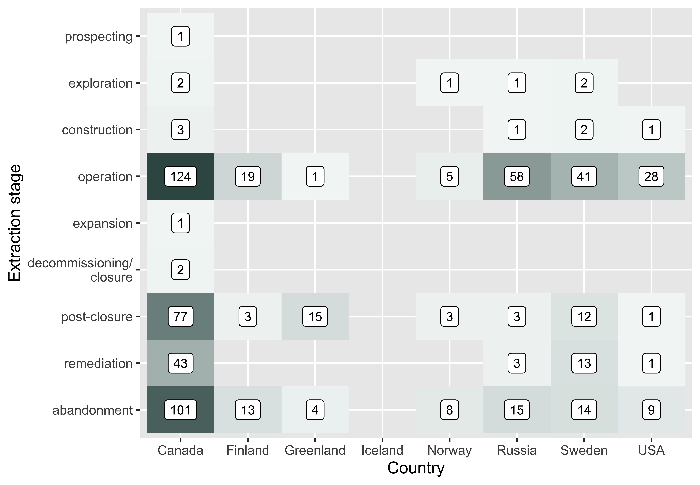

This task aims to comprehensively and systematically collate all research knowledge (including published academic and grey literature) that aims to study the impacts of metal mining and its mitigation measures in Arctic and boreal regions. The task involves using rigorous and internationally accepted methods for summarising large bodies of research; systematic mapping. The output will be an interactive and searchable database of all relevant research along with a detailed report explaining the methods and results. The systematic mapping will highlight research gaps needing more studies, and topics where there are enough studies to allow complex full synthesis of the study finding.
We searched multiple bibliographic databases, online search engines and organisational websites for relevant research literature using a tested search strategy. We also collected evidence from stakeholders identified in the wider 3MK project. We screened articles at three distinct stages (title, abstract, and full text) according to a predetermined set of inclusion criteria, with consistency checks between reviewers at each level. We then extracted data relating to causal linkages between actions or impacts and measured outcomes, along with descriptive information about the articles and studies and entered data into an interactive systematic map database. We have visualised this database in an interactive evidence atlas and identify knowledge gaps and clusters using heat maps.
Read more about our methods in this detailed, a priori protocol document, published in the journal Environmental Evidence.
Click on each subheading below to explore each topic.
Following assessment of more than 44,000 research records, we identified a total of 585 relevant articles that focused on the impacts of mining and it's mitigation measures in Arctic and boreal regions. You can see the flow of information through our review process in the flow diagram to the right.
These articles contained a total of 902 independent measured outcomes (impacts).
The evidence atlas below provides an interactive interface to explore the articles and their outcomes across geographical space. Click and hold to drag the map, double click or use the zoom controls to zoom in and out, and click on a point to examine each article's descriptive information. Clusters of numbers represent multiple articles from a similar region. Zoom in or click on the cluster to separate them.

There was a steady increase in research over time, starting from 1973.
The interactive plot below shows the distribution of articles across countries.

Most articles in the map used a ‘control-impacts’ study design (n = 396), with a substantial number employing correlative designs (n = 142). Only 5 articles examined just the impact/affected site with no real study design.

Related to this, the most common comparator was a reference site/population (n = 254).

The most commonly reported study setting was collection from the field and analysis in the laboratory (n = 358), followed by social science (n = 102) and laboratory experiments (n = 86).

Similarly, the context of the included articles’ studies was predominantly in situ (n = 459), with a smaller number using ex situ methods (n = 118) and very few employing mesocosms (n = 8).
A total of 177 unique mines (click to download a CSV file describing the unique mines) were reported across the 585 articles. They were distributed across countries as follows: Canada (n = 96 articles); Russia (n = 28); Sweden (n = 18); USA (n = 13); Finland (n = 9); Norway (n = 9); Greenland (n = 4); Iceland (n = 0).
The metals mined are shown in the figure to the right. Copper was the most commonly reported metal (n = 208), followed by gold (n = 162) and zinc (n = 141). The metals extracted were not stated in 32 articles. Some articles stated only the principle metal mined, whilst others reported all metals encountered and extracted - the data are therefore representative of the articles and may not reflect precisely the state of metals mined across the Arctic and boreal regions.

The most commonly reported mine type was open pit (n = 218), with less than half this number underground (n = 80) and surface (n = 72), and only 22 articles focused on placer mines.

The most commonly studied extraction stage was operation (n = 276 articles), followed by abandonment (n = 164), postclosure (n = 114), and remediation (n = 60). Prospecting, exploration, construction, expansion and decommissioning/closure were studied far less frequently (n = 1 to 7).

The most commonly co-reported stages (stages that occurred in the same article) were post-closure and remediation (n = 21), followed by operation and abandonment (n = 17). Articles more commonly reported multiple stages following resource extraction activities (decommissioning/closure, post-closure, remediation and abandonment), than earlier stages. No articles reported more than three stages together.

The majority of evidence focuses on operation of mines in Canada. Operation was the most commonly reported stage in Canada, Finland, Russia, Sweden and the USA. In Greenland and Norway post-closure was most frequent. In Russia, the majority of articles focused on operation, with very few on post-closure or remediation relative to Canada and Sweden.

Across all articles, the most commonly reported outcome category was metal concentration (n = 357), followed by water quality (n = 104) and species biomass or distribution (n = 102). The least frequently reported outcome was hydrological flow or landscape change (n = 16).
The most commonly reported system was biodiversity (n = 352), followed by water (n = 310), societies (n = 178), and soil/geology (n = 52), with air the least common (n = 10). Within biodiversity, the most common component was fauna (n = 214), followed by flora (n = 125) and ecosystems (n =13). Within water, surface, sediment and groundwater were approximately equal (n = 114, 104, and 87 respectively), with ice rather infrequent (n = 5). For societies, health and wellbeing was most common (n = 106), followed by economic (n = 46), service and infrastructure (n = 12), landscapes (n = 8) and culture and history (n = 6). Soil surface was the only component reported for soil/geology articles (n = 52). Within air, atmosphere was most common (n = 9) and climate reported rarely (n = 1). The most commonly reported factors were individual fauna species (n = 116), water sediment quality (n = 104) and surface water quality (n = 104).
Click on a bubble in the visualisation to open a new window showing a table of studies.